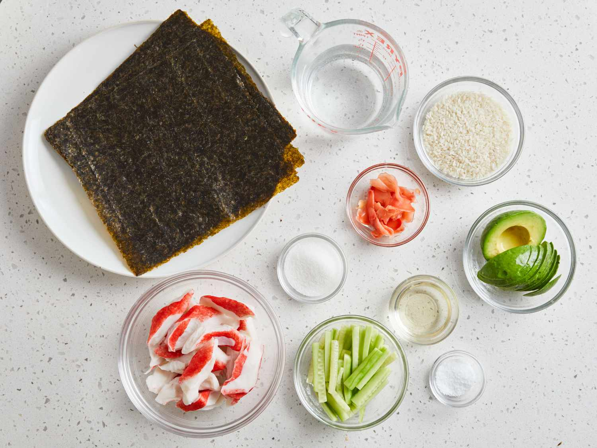
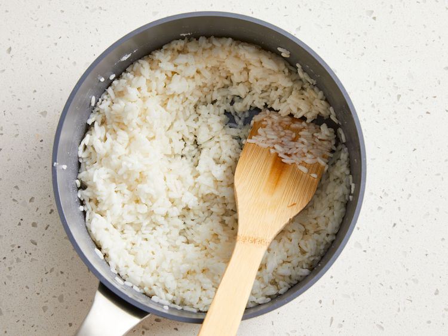
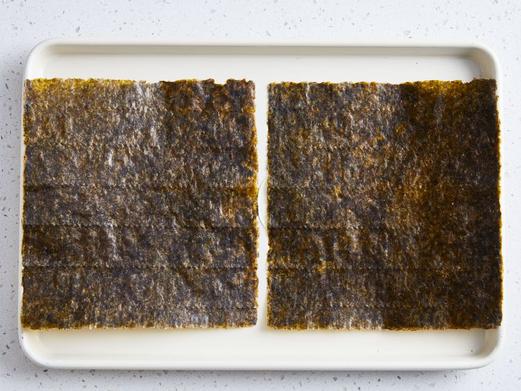
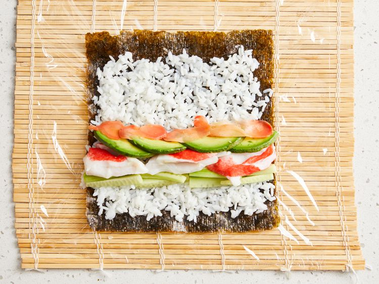
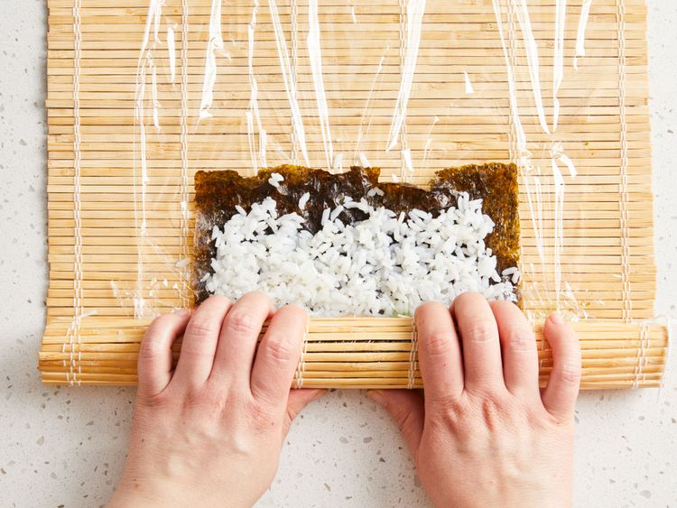
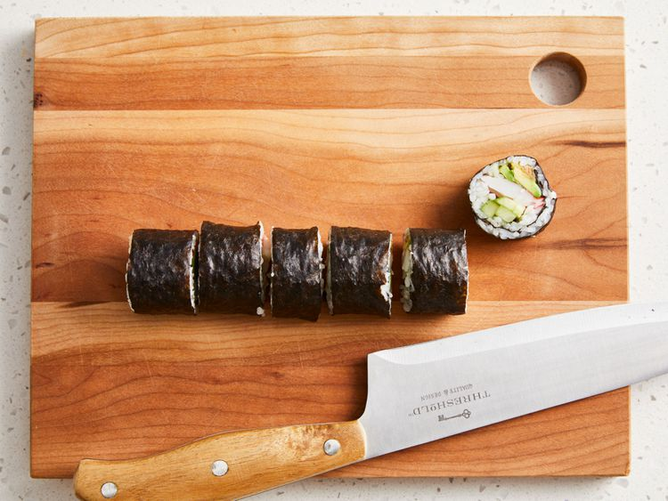

Sushi (すし, 寿司, 鮨, 鮓) is a traditional Japanese dish made with vinegared rice (鮨飯, sushi-meshi), typically seasoned with sugar and salt, and combined with a variety of ingredients (ねた, neta), such as seafood, vegetables, or meat: raw seafood is the most common, although some may be cooked. While sushi comes in numerous styles and presentation, the current defining component is the vinegared rice, also known as shari (しゃり), or sumeshi (酢飯).
Sushi rolls can be filled with any ingredients you choose. Try smoked salmon instead of imitation crabmeat. Serve with teriyaki sauce and wasabi.
Gather all ingredients. Preheat the oven to 300 degrees F (150 degrees C)
Bring water to a boil in a medium pot; stir in rice. Reduce heat to medium-low, cover, and simmer until rice is tender and water has been absorbed, 20 to 25 minutes.
Mix rice vinegar, sugar, and salt in a small bowl. Gently stir into cooked rice in the pot and set aside.
Lay nori sheets on a baking sheet.
Heat nori in the preheated oven until warm, 1 to 2 minutes.
Center 1 nori sheet on a bamboo sushi mat. Use wet hands to spread a thin layer of rice on top. Arrange 1/4 of the crabmeat, avocado, cucumber, and pickled ginger over rice in a line down the center.
Lift one end of the mat and roll it tightly over filling to make a complete roll. Repeat with remaining ingredients.
Use a wet, sharp knife to cut each roll into 4 to 6 slices.
